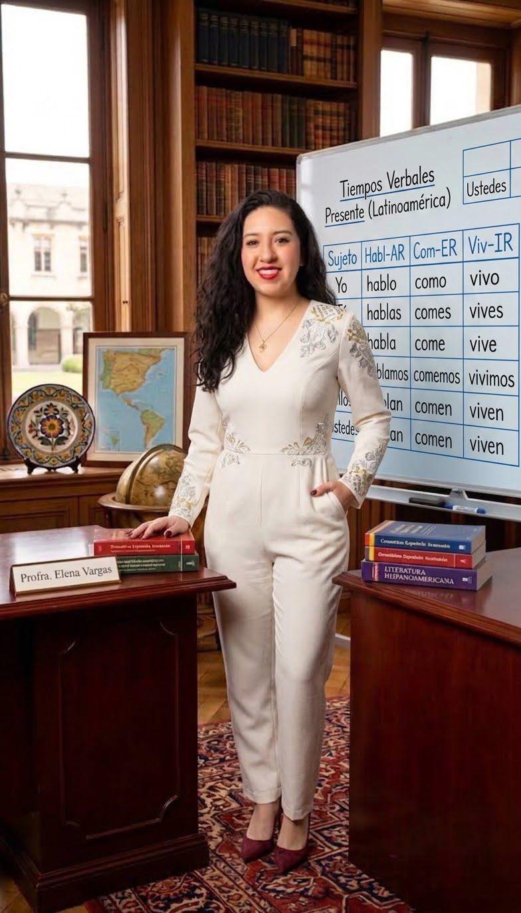
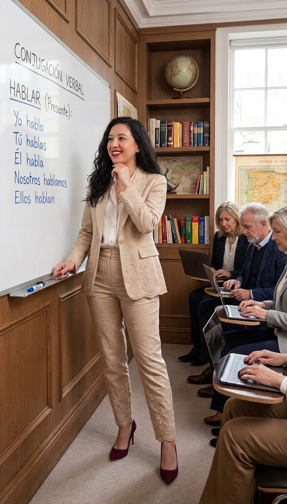
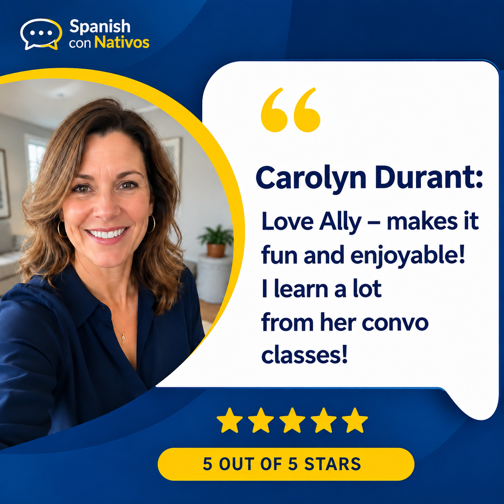
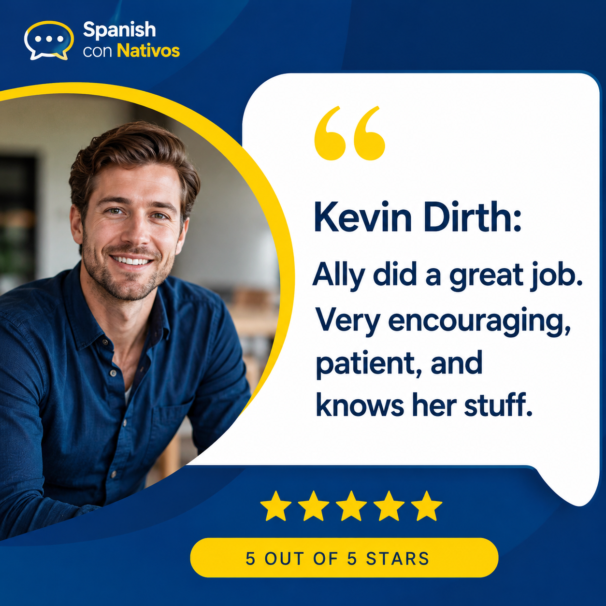
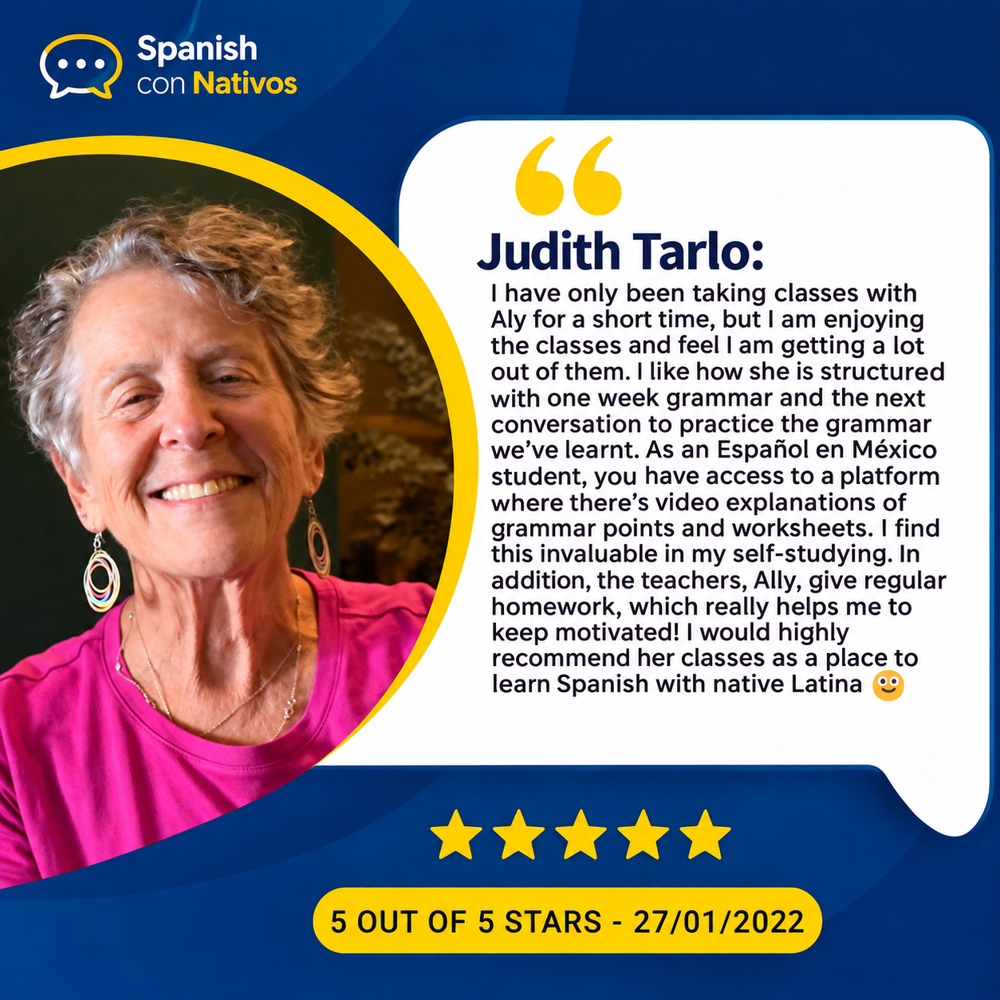
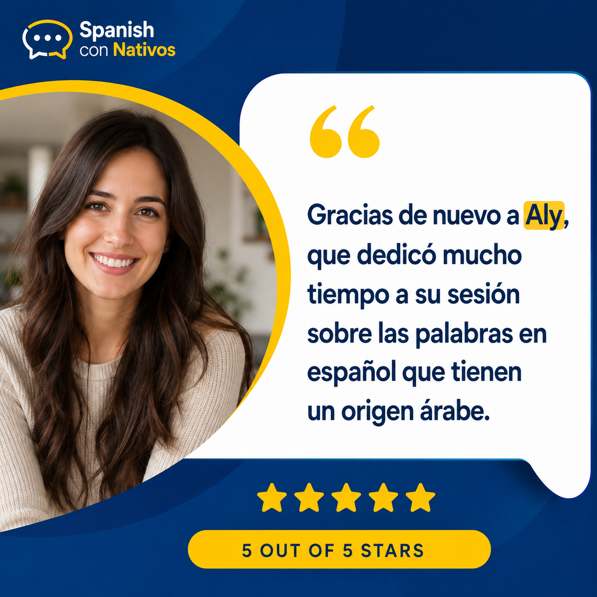
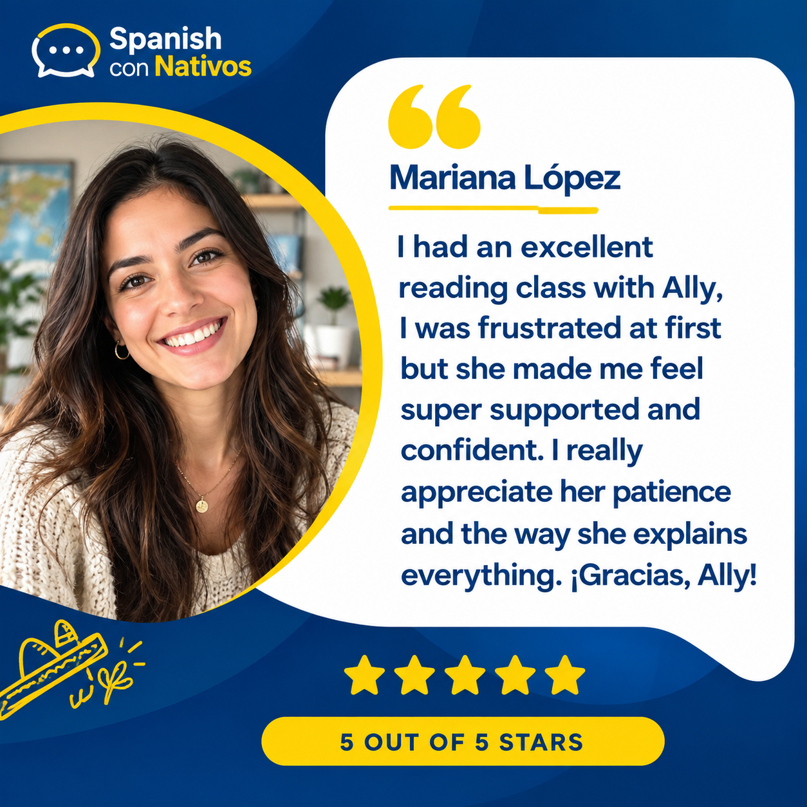
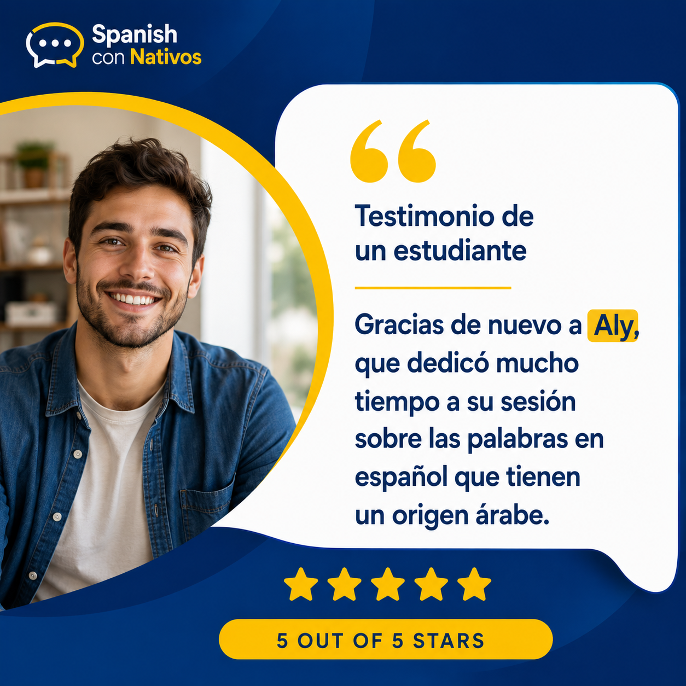
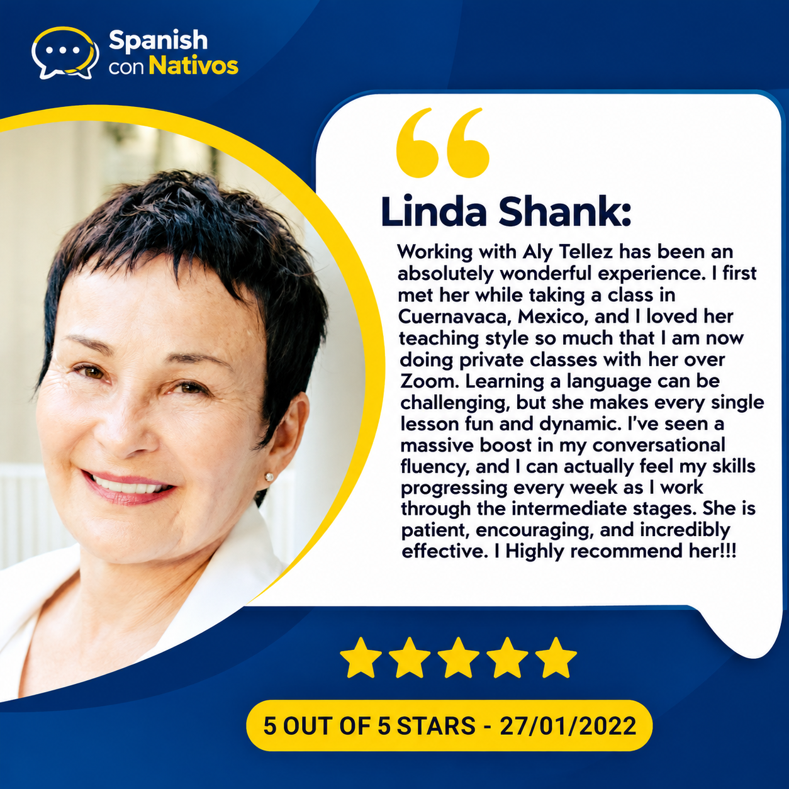

💬
Conversaciones reales
Practica diálogos, preguntas y respuestas basados en situaciones auténticas. El objetivo es que puedas reaccionar y expresarte con mayor naturalidad.
Aprende español de forma práctica, natural y personalizada. Con el Método Comunicativo, usamos el idioma desde el primer momento para ayudarte a comprender, expresarte y desenvolverte en situaciones reales.

El Método Comunicativo pone la comunicación en el centro del aprendizaje. En lugar de limitarte a memorizar reglas, practicas cómo usar el español para expresar ideas, resolver situaciones, hacer preguntas, conversar y conectar con otras personas.
Aprendemos español para comunicarnos, no solo para estudiarlo. Cada clase combina comprensión, interacción y producción oral con actividades adaptadas a tus objetivos, nivel y situaciones de la vida real.
Practica diálogos, preguntas y respuestas basados en situaciones auténticas. El objetivo es que puedas reaccionar y expresarte con mayor naturalidad.
Aprende vocabulario y estructuras dentro de situaciones concretas, para entender cuándo, cómo y por qué se utilizan.
Trabajamos sonidos, ritmo, entonación y claridad mientras hablas, para que tu comunicación sea cada vez más natural.
Conoce expresiones, costumbres y referencias culturales que te ayudan a comprender mejor el español de México y comunicarte con confianza.

Soy Aly Téllez, mexicana, hablante nativa de español y profesora profesional. Cuento con más de 16 años de experiencia en educación, una Licenciatura en Enseñanza del Español, especialización en Enseñanza del Español como Segunda Lengua y Maestrías en Educación.
Mi enfoque comunicativo busca que cada clase tenga un propósito práctico: que puedas entender mejor, participar más y hablar con mayor seguridad. Adaptamos las actividades a tu nivel, intereses y objetivos, manteniendo un ambiente profesional, dinámico y cercano.
Testimonios compartidos por estudiantes de Spanish con Nativos. Se presentan en su idioma original.










No importa dónde estés empezando: las actividades cambian según tus necesidades para que siempre tengas oportunidades reales de comunicarte.
Desarrolla vocabulario funcional, estructuras esenciales y frases útiles para comenzar a interactuar.
Amplía tus recursos para conversar, explicar ideas, resolver situaciones y desenvolverte con mayor confianza.
Perfecciona precisión, matices, espontaneidad y naturalidad en conversaciones más complejas.
Hablar, escuchar, interactuar y recibir retroalimentación. La meta es convertir lo aprendido en una herramienta que puedas usar fuera de la clase.
Lleva tu aprendizaje más allá de la pantalla con un Viaje de Inmersión a México diseñado para practicar español en situaciones reales y descubrir de cerca la riqueza cultural de nuestro país.
Durante la experiencia, te acompañaré para que el español no sea solamente una materia, sino una herramienta para conversar, preguntar, comprender, explorar y conectar. Podrás poner en práctica lo aprendido mientras conoces la cultura mexicana, sus tradiciones, gastronomía, historia y vida cotidiana.
Practica conversaciones útiles durante actividades, recorridos y experiencias cotidianas.
Descubre costumbres, tradiciones, gastronomía y expresiones que dan vida al español mexicano.
Te ayudaré a comprender expresiones, ampliar vocabulario y desenvolverte con mayor seguridad.
Lo que practicas en clase cobra sentido cuando lo utilizas para comunicarte fuera del aula.
Ideal para estudiantes que quieren practicar español mientras viven momentos auténticos y conocen la diversidad cultural de México.
Aprende español más allá del salón de clases. Descubre momentos, encuentros y experiencias culturales que hemos compartido.Discover the conversations, connections, and cultural experiences we've shared beyond the classroom.
Momentos reales de experiencias anteriores con estudiantes.Real moments from past experiences with students.
Da el siguiente paso con una clase basada en el Método Comunicativo y enfocada en tus objetivos.